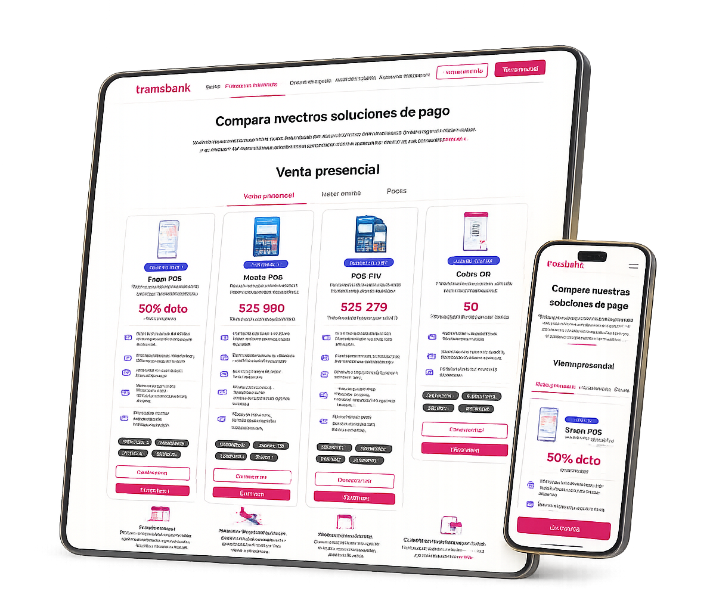
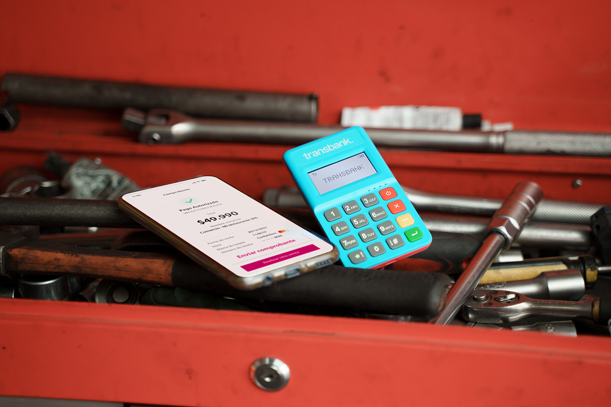
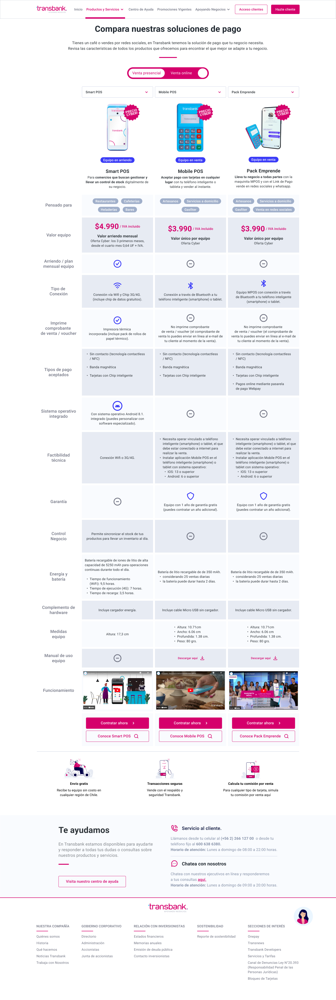
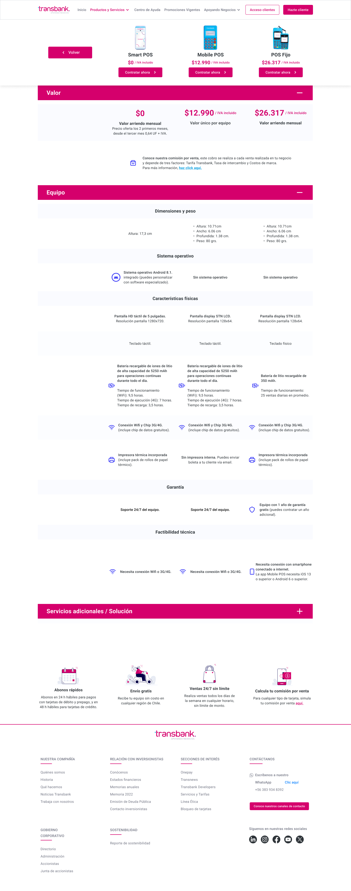
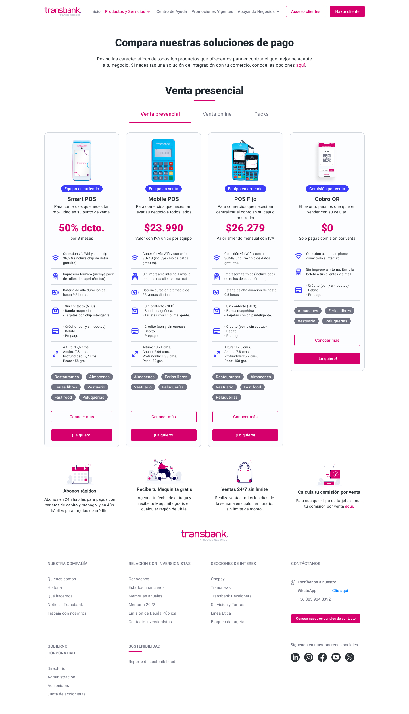

Transbank
Helping businesses make confident payment decisions by redesigning Transbank's product comparison experience.
Transbank redesigned its Product Comparator to simplify how businesses evaluate payment solutions. Through user research, behavioral analysis and multiple design iterations, we transformed a feature-heavy comparison tool into a decision-focused experience that improved discoverability, reduced cognitive load and increased conversion by an estimated 11.5%.


Transbank's growing portfolio of payment solutions made it increasingly difficult for businesses to understand which product best suited their needs.
Although detailed product information was available, it was distributed across multiple pages and focused heavily on technical specifications rather than helping customers make informed decisions. As a result, comparing alternatives required unnecessary effort, creating friction during the evaluation process and reducing confidence before purchase.
The challenge was to transform the Product Comparator from an information-heavy catalog into a decision-making tool that helped businesses quickly identify the right solution while supporting Transbank's commercial objectives.
Before exploring solutions, we needed to understand how businesses evaluated payment products, where uncertainty appeared during the decision-making process, and what information truly influenced their choice.
During a three-week discovery phase, we combined qualitative and quantitative methods to build a complete picture of the customer journey. This included customer interviews, analytics review, behavioral analysis, competitive benchmarking, and collaborative sessions with Marketing, CRO, and Development.
Rather than validating assumptions, the goal was to uncover the real barriers preventing businesses from confidently selecting the right payment solution.
The research phase helped us identify the main sources of friction in the product selection journey. We analyzed how users accessed the comparator, how they interpreted product information, and what prevented them from confidently choosing a solution.
The findings showed that users valued comparison, but the experience needed to be easier to find, easier to scan, and more focused on decision-making. Customers were not looking for every technical detail upfront; they needed the right information at the right moment.
This shifted the project from a visual redesign into a product evolution focused on reducing uncertainty.
20+ interviews helped us understand how businesses evaluated payment solutions and what information influenced their purchase decision.
The first redesigned version was tested against the existing comparator to identify what improved, what created friction, and what needed to change.
Analytics and Hotjar helped us review navigation patterns, drop-offs, discoverability issues, and interaction behavior across the product journey.
We reviewed comparison patterns from digital products and e-commerce experiences to identify clearer ways of presenting product differences.
Research revealed that the problem wasn't a lack of information.
It was the way information supported decision-making.
Across interviews, usability testing, analytics, and behavioral analysis, five recurring patterns consistently emerged.
Many users didn't know a comparison tool existed or struggled to find it within the website.
Design implication — Increase discoverability by integrating the comparator into key navigation points and product journeys.
Users appreciated detailed specifications, but too much technical information increased cognitive load and slowed decision-making.
Design implication — Prioritize essential information first and progressively disclose technical details only when needed.
Businesses described what they wanted to achieve instead of searching for a specific payment terminal.
Design implication — Organize the experience around customer scenarios rather than a flat product catalog.
Important information was distributed across multiple pages, forcing users to remember details while switching between products.
Design implication — Centralize product comparison into a single, consistent experience.
Users weren't looking to become product experts — they simply wanted enough information to feel confident choosing the right solution.
Design implication — Design for confident decision-making instead of information density.
Research fundamentally changed our perspective.
The goal was no longer to help users compare products.
The goal became helping businesses make confident decisions.
The research findings were translated into a set of design principles that guided every iteration of the Product Comparator. These principles helped the team make consistent design decisions throughout the project.
Every screen should help users choose the right payment solution — not simply present information.
Prioritize the most relevant information first and progressively reveal technical details only when necessary.
Enable users to evaluate products side by side using clear, consistent criteria.
Whether users were exploring products for the first time or comparing their final options, the experience should provide the right level of guidance.
Every design decision should improve customer confidence while supporting product discoverability and commercial objectives.
These principles became the foundation for every iteration, allowing the Product Comparator to evolve from an information-heavy catalog into a guided decision-making experience.
Rather than delivering a single redesign, the Product Comparator evolved through multiple iterations. Each version responded to research findings, usability testing, and business feedback, gradually shifting the experience from an information-heavy comparison tool into a guided decision-making product.

Technical Comparison. The first version focused on presenting complete technical specifications in a traditional comparison table. While comprehensive, users needed to scan large amounts of information before identifying the most suitable payment solution.

Product Discovery. The second iteration introduced product cards and improved visual hierarchy, making exploration easier while reducing the initial complexity of the comparison experience.

Decision-Focused Experience. The final redesign prioritized decision-making by surfacing only the most relevant information first, while keeping detailed specifications accessible when users needed them.
Each iteration answered a different question.
Version 1 proved comparison was valuable.
Version 2 showed where complexity appeared.
Version 3 transformed those learnings into a simpler, more effective product experience.
By simplifying the comparison experience and focusing on decision-making, the Product Comparator became easier to discover, easier to understand, and more effective at supporting product selection.
The project demonstrated that improving decision-making was more valuable than simply providing more information. By reducing uncertainty, we created a better experience for users while supporting Transbank's commercial objectives.
The final Product Comparator experience consolidated multiple research findings, usability improvements and business goals into a decision-focused experience that helps businesses compare payment solutions faster and with greater confidence.
The redesign helped reposition the Product Comparator as a decision-support tool, improving how businesses discover, compare and choose Transbank payment solutions.
Impact
Created a scalable comparison framework for future product launches.
Reduced uncertainty by making payment solutions easier to understand and compare.
Shifted the experience from information-heavy comparison to decision-first product design.
Learnings
Early user research helped the team focus on real customer barriers instead of assumptions.
Each version revealed new opportunities to simplify the experience.
The most valuable solution was not showing more information, but helping users make better decisions with less effort.
The biggest takeaway: great product experiences are built through research, collaboration and continuous refinement.